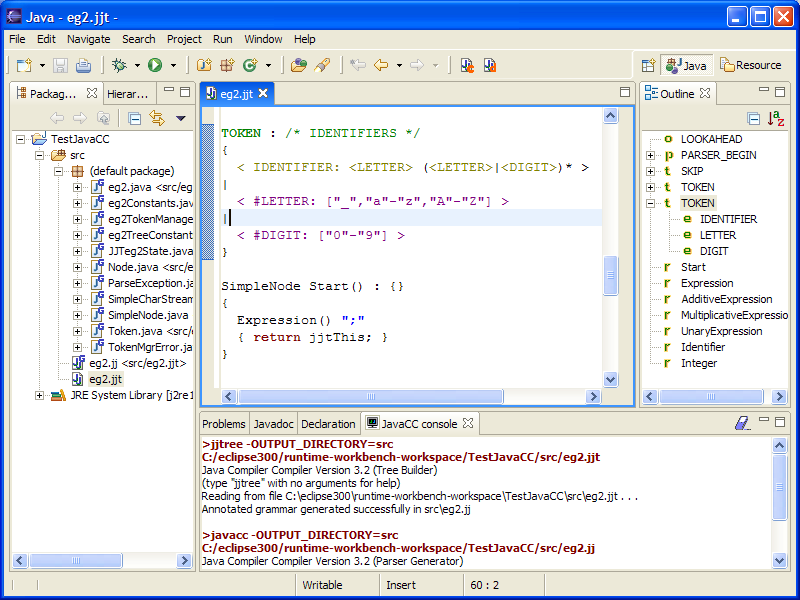

Select a rule (double clic) and open context menu (right clic).

You can go back of to last selection if you whish.

The main features are :
1 - Syntax coloring
2 - Outline
3 - Navigation to definition and back
4 - Errors and warnings reporting
5 - Full output from JavaCC in console
1) Syntax coloring
JavaCC keywords are in dark green; "LOOKAHEAD", "PARSER_BEGIN"...
Java keywords are in dark red; "abstract","boolean","break","byte".
2) Outline

Icons are "o" for Options, "t" for
Token, "e" for Expressions, "r" for Rules.
The .jjt and .jj files are parsed with the JavaCC.jj grammar
given in the examples of JavaCC.
3) Navigation to definition
and back
Select a rule (double clic) and open context menu (right
clic).
You can go back of to last selection if you whish.
4) Errors and warnings reporting

5) Full output from JavaCC in
console
To show JavaCC console menu "Window" -> "Show
view" -> "Other..."